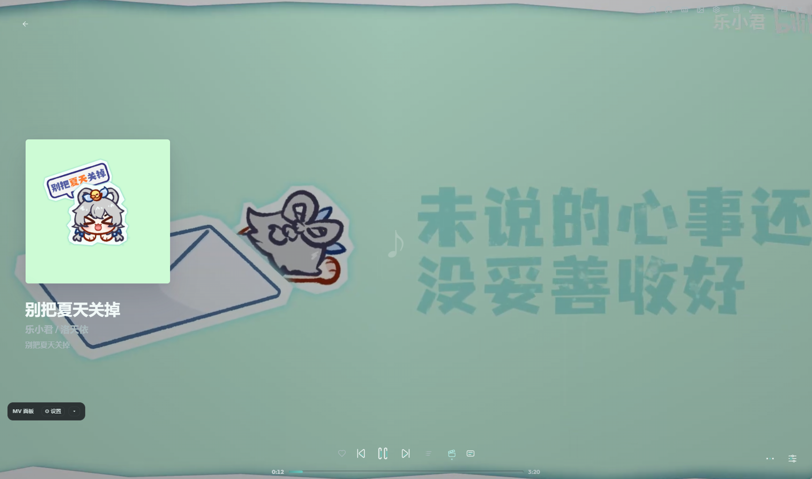
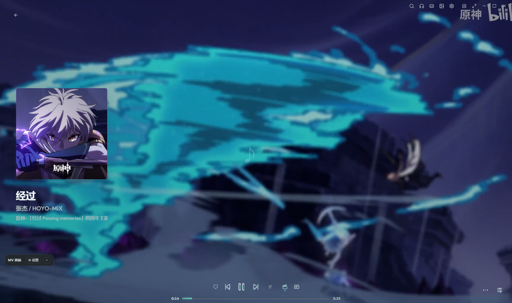
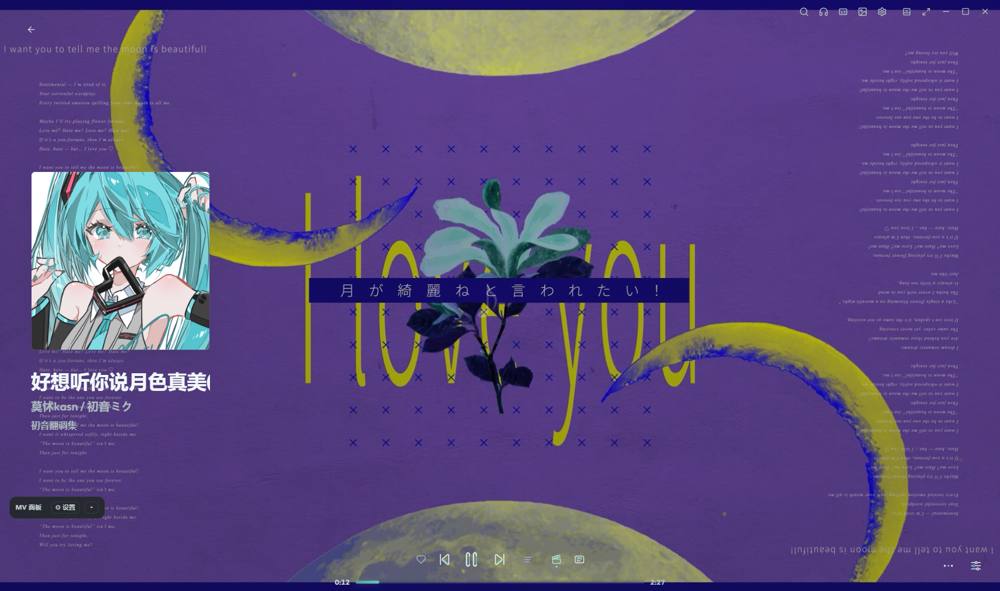
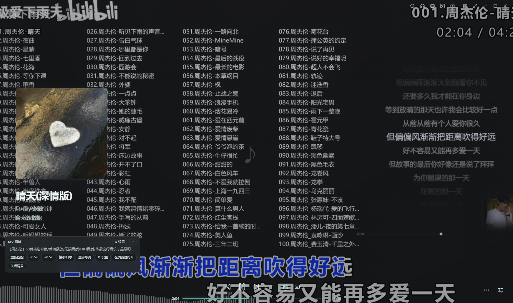
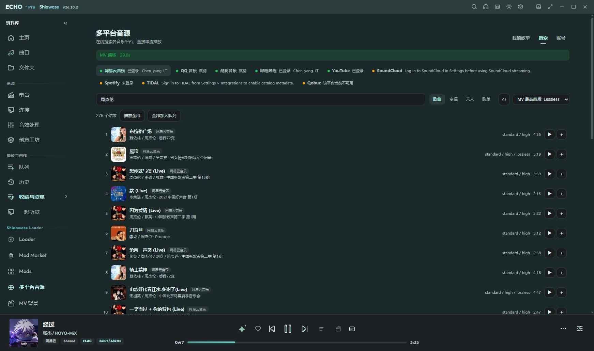
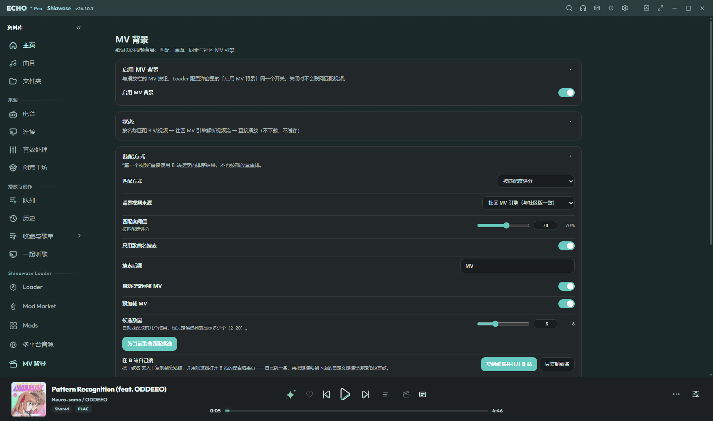
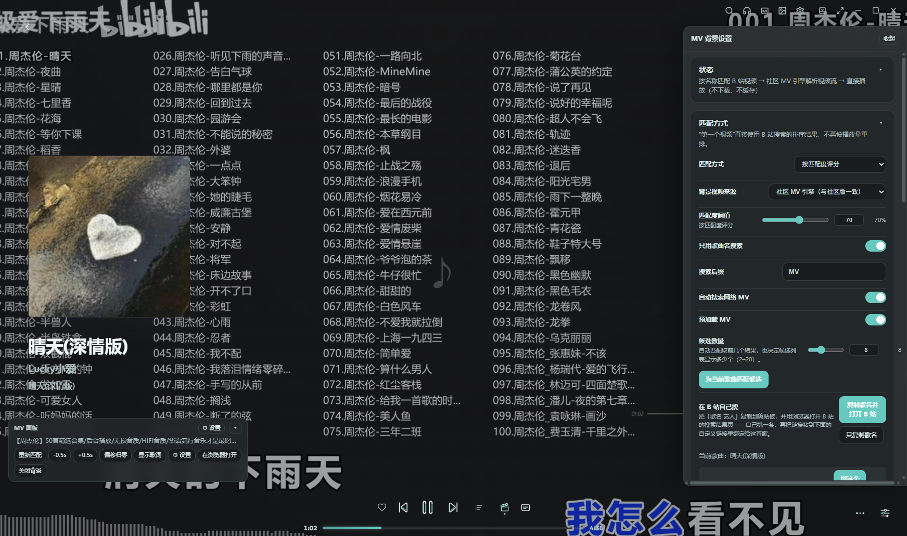

搜索与串流播放
歌曲 / 专辑 / 艺人 / 歌单四类结果，单曲播放、播放全部、加入队列。走播放器自己的播放链路，队列、歌词、音效的表现和本地歌曲一致。
歌曲 / 专辑 / 艺人 / 歌单四类结果，单曲播放、播放全部、加入队列。走播放器自己的播放链路，队列、歌词、音效的表现和本地歌曲一致。
打开插件页就是这一页：登录后的账号歌单、收藏夹、稍后再看、每日推荐，整列表播放。粘贴歌单链接即可导入。
点「保存到本地」的歌单存在插件自己的存储里，之后离线也能打开。音质可选，失败自动降级。
歌曲详情页按歌名匹配在线 MV，作为歌词页背景并跟随歌曲进度播放。默认「左右贴合」：画面缩放到两侧恰好贴住窗口宽度。
候选先按歌名与艺人打分，低于匹配度阈值的一律不用；两个候选分数接近时宁可不显示，也不来回换。挑不到满意的可以一键复制歌名并打开 B 站自己找。
可选暂停（停在最后一帧，默认）、循环播放、纯色背景（颜色可选）。
设置界面跟随亮色 / 暗色主题，文字始终可读；侧栏图标与软件同款；分区可折叠并记住展开状态；按钮按下都有明显反馈。
切歌、进详情页、点播放栏 MV 按钮都会重新匹配并对齐到当前播放进度，换歌之后画面不会停在上一首的 MV 上。
下面三张都是实机截图：左侧是当前歌曲，画面就是它匹配到的 MV。







echo.multi-music-sources-2.1.3.echomod。Mods/ 目录。不会。播放地址即用即取，不写曲库、不落盘。只有你主动点「保存到本地」的歌单会保存歌单结构。
没有候选达到匹配度阈值。可以在「MV 背景」页把阈值调低、或把搜索后缀留空，也可以用「复制歌名并打开 B 站」自己挑一条，把链接粘进「自定义视频链接」绑定给这首歌。
九个平台的搜索与播放都可用；歌词与 MV 的支持情况按平台不同，具体见仓库 README 的支持情况表。